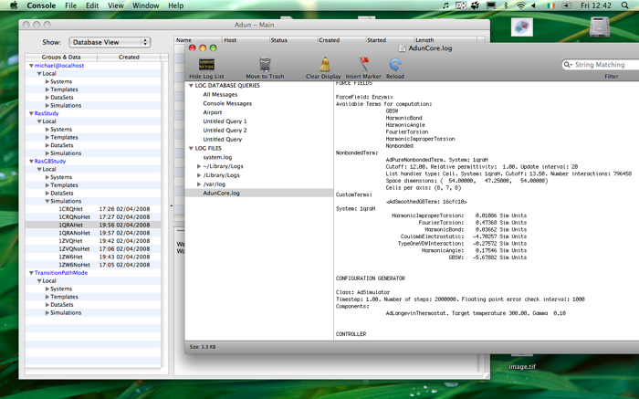

Simulation Logs
There are two logs files associated with every simulation you run which are important source of information. The first, called the Run Log (or AdunCore.log), is the main log for the calculation. It contains information on the simulation setup, for example the system simulated and the checkpointing intervals. The second, the Error Log (AdunCore.errors), contains information on any errors that occur during a simulation. It also contains warning messages about incidents which, although not fatal, the program thinks you should know about.
To view the logs for a simulation simply select it in the database browser (you can also select it when it appears in the analyser or a relationship table) , go to 'Object->View Simulation Logs' and choose the log you want to view. On a Mac the log will be opened using the Console application (shown in the picture below). On linux it will be opened with gedit by default (see the links below for how to change this)
